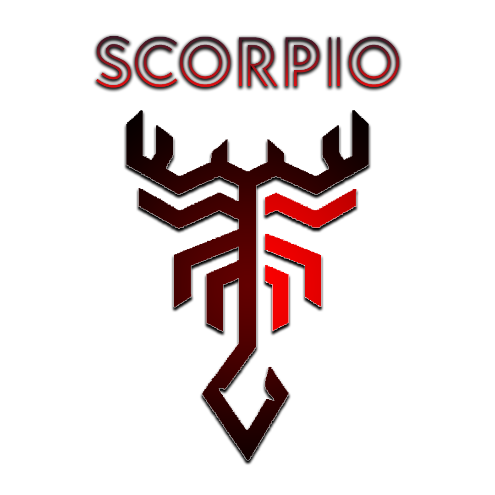

Pioneering AI and CV Excellence
Hello! I'm Rachit Jaiswal, a programmer based in San Diego, California. With extensive experience in all sorts of programming, I specialize in AI/ML. I love the thrill of robotics and competitions such as FIRST.
